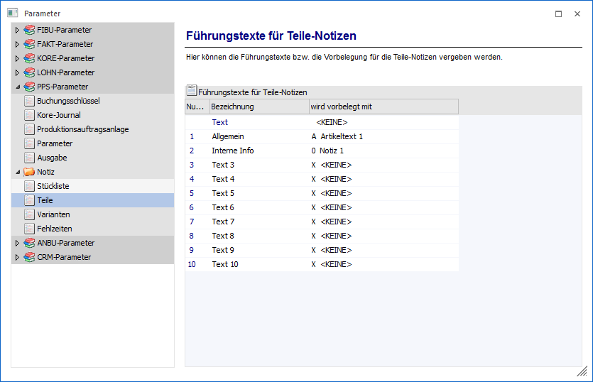

Über den Bereich "PPS-Parameter - Notiz - Teile" können die Texte von Stücklistenkomponenten parametrisiert werden.
Hinweis
Standardmäßig wird das Fenster in einem "Lesemodus" geöffnet, d.h. es können die bestehenden Einstellungen kontrolliert, Änderungen allerdings nicht durchgeführt werden. Hierfür muss zunächst mit Hilfe des Buttons "Bearbeiten" der "Bearbeitungsmodus" aktiviert werden. Alternativ kann diese Aktivierung auch über das Kontextmenü der rechten Maustaste (Funktion "Applikation xxx bearbeiten") erfolgen.

In der Tabelle stehen folgende Spalten zur Verfügung:
Ø Bezeichnung
Hier können die Führungstexte für die 10 Textzeilen, welche pro Komponente in den Einzelzeilen der Stückliste angezeigt werden, bearbeitet werden. Die Führungstexte können jeweils 25-stellig alphanumerisch sein, die Texte selbst sind 50-stellig.
Ø wird vorbelegt mit
Bei Hinterlegung einer Komponente in der Stückliste können die Textzeilen bereits aus dem Artikelstamm vorbelegt werden. Welcher Text aus dem Artikelstamm in welches Textfeld der Teile-Notiz gestellt werden soll, kann an dieser Stelle mit Hilfe einer Auswahlliste vorbelegt werden (Artikeltext 1 bzw. 2 oder Artikelnotiz 1 bis 10).